# Step 1: Install FFTW
!apt-get install libfftw3-dev
!apt-get install libfftw3-mpi-dev
# Step 2: Set paths for Dedalus installation
import os
import matplotlib.pyplot as plt
os.environ['MPI_INCLUDE_PATH'] = "/usr/lib/x86_64-linux-gnu/openmpi/include"
os.environ['MPI_LIBRARY_PATH'] = "/usr/lib/x86_64-linux-gnu"
os.environ['FFTW_INCLUDE_PATH'] = "/usr/include"
os.environ['FFTW_LIBRARY_PATH'] = "/usr/lib/x86_64-linux-gnu"
# Step 3: Install Dedalus using pip
!pip3 install --no-cache http://github.com/dedalusproject/dedalus/zipball/d3/
#!pip install dedalus
zsh:1: command not found: apt-get
zsh:1: command not found: apt-get
Collecting http://github.com/dedalusproject/dedalus/zipball/d3/
ERROR: HTTP error 404 while getting http://github.com/dedalusproject/dedalus/zipball/d3/
ERROR: Could not install requirement http://github.com/dedalusproject/dedalus/zipball/d3/ because of HTTP error 404 Client Error: Not Found for url: https://codeload.github.com/DedalusProject/dedalus/legacy.zip/d3 for URL http://github.com/dedalusproject/dedalus/zipball/d3/
d3.SphereBasis(coords, (Nphi, Ntheta), radius=R, dealias=dealias, dtype=dtype)
---------------------------------------------------------------------------
NameError Traceback (most recent call last)
Cell In[2], line 1
----> 1 d3.SphereBasis(coords, (Nphi, Ntheta), radius=R, dealias=dealias, dtype=dtype)
NameError: name 'd3' is not defined
import numpy as np
import dedalus.public as d3
import logging
logger = logging.getLogger(__name__)
# Simulation units
meter = 1 / 6.37122e6
hour = 1
second = hour / 3600
# Parameters
Nphi = 256
Ntheta = 128
dealias = 3/2
R = 6.37122e6
Omega = 7.292e-5
nu = 1e5 / 32**2 # Hyperdiffusion matched at ell=32
g = 9.80616
timestep = 100
stop_sim_time = 360 * 3600
dtype = np.float64
# Bases
#mesh = [params.getint('Xn'),params.getint('Yn')]
coords = d3.S2Coordinates('phi', 'theta')
dist = d3.Distributor(coords, dtype=dtype)
basis = d3.SphereBasis(coords, (Nphi, Ntheta), radius=R, dealias=dealias, dtype=dtype)
# Fields
u = dist.VectorField(coords, name='u', bases=basis)
u_c = dist.VectorField(coords, name='u_c', bases=basis)
u_200 = dist.VectorField(coords, name='u_200', bases=basis)
u_800 = dist.VectorField(coords, name='u_800', bases=basis)
u_b = dist.VectorField(coords, name='u_b', bases=basis)
u_init = dist.VectorField(coords, name='u_init', bases=basis)
u_b_dt = dist.VectorField(coords, name='u_b_dt', bases=basis)
psi_grad = dist.VectorField(coords, name='psi_grad', bases=basis)
vor_b = dist.Field(name='vor_b', bases=basis)
p_b = dist.Field(name='p_b', bases=basis)
omega = dist.Field(name='omega', bases=basis)
T_eq = dist.Field(name='T_eq', bases=basis)
theta_b = dist.Field(name='theta_b', bases=basis)
theta_b_eq = dist.Field(name='theta_b_eq', bases=basis)
theta_c = dist.Field(name='theta_c', bases=basis)
theta_c_eq = dist.Field(name='theta_c_eq', bases=basis)
theta_200 = dist.Field(name='theta_200', bases=basis)
theta_800 = dist.Field(name='theta_800', bases=basis)
theta_200_eq = dist.Field(name='theta_200_eq', bases=basis)
theta_800_eq = dist.Field(name='theta_800_eq', bases=basis)
k_theta_200 = dist.Field(name='k_theta_200', bases=basis) # thermal damping in the first layer
k_theta_800 = dist.Field(name='k_theta_800', bases=basis) # thermal damping in the second layer
k_uv_200 = dist.Field(name='k_uv_200', bases=basis)
k_uv_800 = dist.Field(name='k_uv_800', bases=basis)
psi_b = dist.Field(name='psi_b', bases=basis)
vor_b = dist.Field(name='vor_b', bases=basis)
h = dist.Field(name='h', bases=basis)
tan_theta = dist.Field(name='tan_theta', bases=basis)
cos_theta = dist.Field(name='cos_theta', bases=basis)
zonal_unit = dist.VectorField(coords, name='zonal_unit', bases=basis) # zonal direction unit vector
meridional_unit = dist.VectorField(coords, name='zonal_unit', bases=basis) # zonal direction unit vector
# Substitutions (parameters)
zcross = lambda A: d3.MulCosine(d3.skew(A))
# Initial conditions: zonal jet
phi, theta = dist.local_grids(basis)
lat = np.pi / 2 - theta + 0*phi
umax = 80
cp = 1004
B = 0.124
A = 0.797
lat0 = np.pi / 7
lat1 = np.pi / 2 - lat0
en = np.exp(-4 / (lat1 - lat0)**2)
jet1 = (lat0 <= lat) * (lat <= lat1)
u_jet1 = umax / en * np.exp(1 / (lat[jet1] - lat0) / (lat[jet1] - lat1))
lat0 = -(np.pi / 7)
lat1 = -(np.pi / 2) - lat0
en = np.exp(-4 / (lat1 - lat0)**2)
jet2 = (lat0 >= lat) * (lat >= lat1)
u_jet2 = umax / en * np.exp(1 / (lat[jet2] - lat0) / (lat[jet2] - lat1))
#u_c['g'][0][jet1] = u_jet1 # 0 = zonal component, 1 = meridional component
#u_c['g'][0][jet2] = u_jet2 # 0 = zonal component, 1 = meridional component
#u_b['g'][0][jet1] = u_jet1 # 0 = zonal component, 1 = meridional component
#u_b['g'][0][jet2] = u_jet2 # 0 = zonal component, 1 = meridional component
u_init['g'][0][jet1] = u_jet1 # for reference
u_init['g'][0][jet2] = u_jet2 # for reference
# Initial conditions: perturbation
lat2 = np.pi / 4
#hpert = 120 * meter * 10000000
alpha = 1 / 3
beta = 1 / 3
u_b['g'][1] += 1/10000 * np.cos(lat) * np.exp(-((phi-np.pi)/alpha)**2) * np.exp(-((lat2-lat)/beta)**2)
lat2 = -np.pi / 4
u_b['g'][1] += 1/10000 * np.cos(lat) * np.exp(-((phi-np.pi)/alpha)**2) * np.exp(-((lat2-lat)/beta)**2)
vor_b = d3.div(d3.skew(u_b)).evaluate()
# Initial conditions: balanced wind
c = dist.Field(name='c')
problem = d3.LBVP([psi_b, c], namespace=locals())
problem.add_equation("cp*B*lap(psi_b) + c = vor_b")
problem.add_equation("ave(psi_b) = 0")
solver = problem.build_solver()
solver.solve()
plt.figure()
plt.contourf(psi_b['g']/(cp*B))
# Initial conditions: balanced wind
c = dist.Field(name='c')
problem = d3.LBVP([theta_b, c], namespace=locals())
problem.add_equation("cp*B*lap(theta_b) + c = - div(dot(u_b, grad(u_b)) + 2*Omega*zcross(u_b))")
problem.add_equation("ave(theta_b) = 0")
solver = problem.build_solver()
solver.solve()
#u_init['g'][0] = u_b # for reference
tan_theta['g'] = np.tan(lat)
cos_theta['g'] = np.cos(lat)
zonal_unit['g'][0] = 1
zonal_unit['g'][1] = 0
meridional_unit['g'][0] = 0
meridional_unit['g'][1] = 1
# define radiative equilibrium profile
p = np.arange(1000,0,-100)
PP,yy = np.meshgrid(p,theta.T)
Teq = np.zeros((np.shape(lat)[1],np.shape(p)[0]))
Teq2 = np.ones((np.shape(lat)[1],np.shape(p)[0]))*200
Teq = (315 - 60*np.cos(yy)**2-10*np.log(PP/1000)*np.sin(yy)**2)*(PP/1000)**(2/7)
Teq[Teq<200] = 200
plt.figure()
cs=plt.contourf(Teq.T)
plt.colorbar(cs)
plt.figure()
cs=plt.contourf(Teq.T)
plt.colorbar(cs)
# damping coefficient (see https://www.gfdl.noaa.gov/bibliography/related_files/ih9401.pdf for details)
ka = 1/(40*86400) # for free troposphere (above 700hPa) e-folding time = 40 days
ks = 1/(4**86400) # for near surface (below 700hPa) e-folding time = 4 days
kf = 1/86400 # surface friction
k2 = (ks - ka)*((PP/1000-0.7)/(1-0.7))*np.sin(yy)**4
k2[k2<0] = 0
k_T = ka+k2
k_v = kf*(PP/1000-0.7)/(1-0.7)
k_v[k_v<0] = 0
k_theta_200['g'] = k_T[:,-2]
k_theta_800['g'] = k_T[:,2]
k_uv_200['g'] = k_v[:,-2]
k_uv_800['g'] = k_v[:,2]
# define radiative equilibrium profile
theta_eq = Teq*(1000/PP)**(2/7)
theta_200_eq['g'] = theta_eq[:,-2]
theta_800_eq['g'] = theta_eq[:,2]
theta_200['g'] = theta_eq[:,-2]*0
theta_800['g'] = theta_eq[:,2]*0
theta_b_eq['g'] = (theta_eq[:,-2]+theta_eq[:,2])/2
theta_c_eq['g'] = (theta_eq[:,-2]-theta_eq[:,2])/2
#theta_b['g'] = (theta_eq[:,-2]+theta_eq[:,2])/10
#theta_c['g'] = (theta_eq[:,-2]-theta_eq[:,2])/10
#vor_b['g'] = d3.div(d3.skew(u_b)).evaluate()['g']
problem = d3.LBVP([omega], namespace=locals())
problem.add_equation("omega = -div(u_c)")
solver = problem.build_solver()
solver.solve()
# Initial conditions: perturbation
lat2 = np.pi / 4
hpert = 120 * meter * 100000
alpha = 1 / 3
beta = 1 / 15
theta_b['g'] += 10 * np.cos(lat) * np.exp(-((phi-np.pi)/alpha)**2) * np.exp(-((lat2-lat)/beta)**2)
lat2 = -np.pi / 4
theta_b['g'] += -10 * np.cos(lat) * np.exp(-((phi-np.pi)/alpha)**2) * np.exp(-((lat2-lat)/beta)**2)
# Problem
c = dist.Field(name='c')
problem = d3.IVP([u_c, u_b, theta_c, theta_b, omega, c, p_b], namespace=locals())
#problem.add_equation("dt(u) + nu*lap(lap(u)) + g*grad(h) + 2*Omega*zcross(u) = - dot(u, grad(u))")
#problem.substitutions['Lap(A)'] = 'div(skew(grad(A)))'
problem.add_equation("dt(u_c) = -nu*lap(lap(u_c)) -dot(u_c,grad(u_b)) -dot(u_b,grad(u_c)) -cp*B*grad(theta_b) -2*Omega*zcross(u_c) - tan_theta/R*dot(zonal_unit,u_b)*skew(u_c)-tan_theta/R*dot(zonal_unit,u_c)*skew(u_b)-k_uv_800*u_c")
problem.add_equation("div(u_b) + c = 0" )
problem.add_equation("dt(u_b) = -nu*lap(lap(u_b)) -dot(u_b,grad(u_b)) -dot(u_c,grad(u_c)) -cp*B*grad(p_b) -2*Omega*zcross(u_b) - tan_theta/R*dot(zonal_unit,u_b)*skew(u_b)-tan_theta/R*dot(zonal_unit,u_c)*skew(u_c)-k_uv_800*u_b")
problem.add_equation("ave(p_b) = 0")
#problem.add_equation("dt(u_c) = -nu*lap(lap(u_c)) -dot(u_c,grad(u_b)) -dot(u_b,grad(u_c)) -cp*B*grad(theta_b) -2*Omega*zcross(u_c) -k_uv_800*u_c")
#problem.add_equation("dt(u_b) = -nu*lap(lap(u_b)) -dot(u_b,grad(u_b)) -dot(u_c,grad(u_c)) -cp*B*grad(theta_b-theta_c) -2*Omega*zcross(u_b) -k_uv_800*u_b")
#problem.add_equation("dt(vor_b) = 2*Omega*cos_theta/R*dot(meridional_unit,u_b) + div(skew(u_b_dt)) ")
#problem.add_equation("Lap(psi_b) - vor_b = 0")
# Auxiliary equations defining the first-order reduction
#problem.add_equation("lap(psi_b) = vor_b" )
#problem.add_equation("cp*B*lap(p_b) = div(-nu*lap(lap(u_b)) -dot(u_b,grad(u_b)) -dot(u_c,grad(u_c))-2*Omega*zcross(u_b) - tan_theta/R*dot(zonal_unit,u_b)*skew(u_b)-tan_theta/R*dot(zonal_unit,u_c)*skew(u_c)-k_uv_800*u_b)")
#problem.add_equation("u_b = skew(grad(psi_b))")
#problem.add_equation("u_b = skew(grad(psi_b))")
#problem.add_equation("dt(theta_b) = -div(u_b*theta_b)-div(u_c*theta_c)-(k_theta_200*((theta_b+theta_c)-theta_200_eq)+k_theta_800*((theta_b-theta_c)-theta_800_eq))/2")
#problem.add_equation("dt(theta_b) = -div(u_b*theta_b_eq)-div(u_b*theta_b)-div(u_c*theta_c)-(k_theta_200+k_theta_800)/2*(theta_b-(theta_200_eq+theta_800_eq)/2)")
problem.add_equation("omega = -div(u_c)")
problem.add_equation("dt(theta_b) = -div(u_b*theta_b_eq)-div(u_c*theta_c_eq)-div(u_b*theta_b)-div(u_c*theta_c)-(k_theta_800+k_theta_200)/2*theta_b")
problem.add_equation("dt(theta_c) = -omega*theta_b -div(u_b*theta_c)-div(u_c*theta_b)-(k_theta_800+k_theta_200)/2*theta_c")
#problem.add_equation("u_init = u_init + 0")
#problem.add_equation("dt(h) + nu*lap(lap(h)) + H*div(u) = - div(h*u)")
2022-05-03 15:15:35,229 subsystems 0/1 INFO :: Building subproblem matrices 1/127 (~1%) Elapsed: 0s, Remaining: 2s, Rate: 6.5e+01/s
2022-05-03 15:15:35,297 subsystems 0/1 INFO :: Building subproblem matrices 13/127 (~10%) Elapsed: 0s, Remaining: 1s, Rate: 1.6e+02/s
2022-05-03 15:15:35,373 subsystems 0/1 INFO :: Building subproblem matrices 26/127 (~20%) Elapsed: 0s, Remaining: 1s, Rate: 1.6e+02/s
2022-05-03 15:15:35,447 subsystems 0/1 INFO :: Building subproblem matrices 39/127 (~31%) Elapsed: 0s, Remaining: 1s, Rate: 1.7e+02/s
2022-05-03 15:15:35,520 subsystems 0/1 INFO :: Building subproblem matrices 52/127 (~41%) Elapsed: 0s, Remaining: 0s, Rate: 1.7e+02/s
2022-05-03 15:15:35,594 subsystems 0/1 INFO :: Building subproblem matrices 65/127 (~51%) Elapsed: 0s, Remaining: 0s, Rate: 1.7e+02/s
2022-05-03 15:15:35,674 subsystems 0/1 INFO :: Building subproblem matrices 78/127 (~61%) Elapsed: 0s, Remaining: 0s, Rate: 1.7e+02/s
2022-05-03 15:15:35,752 subsystems 0/1 INFO :: Building subproblem matrices 91/127 (~72%) Elapsed: 1s, Remaining: 0s, Rate: 1.7e+02/s
2022-05-03 15:15:35,960 subsystems 0/1 INFO :: Building subproblem matrices 104/127 (~82%) Elapsed: 1s, Remaining: 0s, Rate: 1.4e+02/s
2022-05-03 15:15:36,039 subsystems 0/1 INFO :: Building subproblem matrices 117/127 (~92%) Elapsed: 1s, Remaining: 0s, Rate: 1.4e+02/s
2022-05-03 15:15:36,097 subsystems 0/1 INFO :: Building subproblem matrices 127/127 (~100%) Elapsed: 1s, Remaining: 0s, Rate: 1.4e+02/s
2022-05-03 15:15:37,001 subsystems 0/1 INFO :: Building subproblem matrices 1/127 (~1%) Elapsed: 0s, Remaining: 2s, Rate: 8.0e+01/s
2022-05-03 15:15:37,066 subsystems 0/1 INFO :: Building subproblem matrices 13/127 (~10%) Elapsed: 0s, Remaining: 1s, Rate: 1.7e+02/s
2022-05-03 15:15:37,129 subsystems 0/1 INFO :: Building subproblem matrices 26/127 (~20%) Elapsed: 0s, Remaining: 1s, Rate: 1.8e+02/s
2022-05-03 15:15:37,205 subsystems 0/1 INFO :: Building subproblem matrices 39/127 (~31%) Elapsed: 0s, Remaining: 0s, Rate: 1.8e+02/s
2022-05-03 15:15:37,279 subsystems 0/1 INFO :: Building subproblem matrices 52/127 (~41%) Elapsed: 0s, Remaining: 0s, Rate: 1.8e+02/s
2022-05-03 15:15:37,348 subsystems 0/1 INFO :: Building subproblem matrices 65/127 (~51%) Elapsed: 0s, Remaining: 0s, Rate: 1.8e+02/s
2022-05-03 15:15:37,413 subsystems 0/1 INFO :: Building subproblem matrices 78/127 (~61%) Elapsed: 0s, Remaining: 0s, Rate: 1.8e+02/s
2022-05-03 15:15:37,479 subsystems 0/1 INFO :: Building subproblem matrices 91/127 (~72%) Elapsed: 0s, Remaining: 0s, Rate: 1.9e+02/s
2022-05-03 15:15:37,554 subsystems 0/1 INFO :: Building subproblem matrices 104/127 (~82%) Elapsed: 1s, Remaining: 0s, Rate: 1.8e+02/s
2022-05-03 15:15:37,633 subsystems 0/1 INFO :: Building subproblem matrices 117/127 (~92%) Elapsed: 1s, Remaining: 0s, Rate: 1.8e+02/s
2022-05-03 15:15:37,692 subsystems 0/1 INFO :: Building subproblem matrices 127/127 (~100%) Elapsed: 1s, Remaining: 0s, Rate: 1.8e+02/s
2022-05-03 15:15:43,276 subsystems 0/1 INFO :: Building subproblem matrices 1/127 (~1%) Elapsed: 0s, Remaining: 0s, Rate: 3.3e+02/s
2022-05-03 15:15:43,313 subsystems 0/1 INFO :: Building subproblem matrices 13/127 (~10%) Elapsed: 0s, Remaining: 0s, Rate: 3.3e+02/s
2022-05-03 15:15:43,348 subsystems 0/1 INFO :: Building subproblem matrices 26/127 (~20%) Elapsed: 0s, Remaining: 0s, Rate: 3.5e+02/s
2022-05-03 15:15:43,385 subsystems 0/1 INFO :: Building subproblem matrices 39/127 (~31%) Elapsed: 0s, Remaining: 0s, Rate: 3.5e+02/s
2022-05-03 15:15:43,419 subsystems 0/1 INFO :: Building subproblem matrices 52/127 (~41%) Elapsed: 0s, Remaining: 0s, Rate: 3.6e+02/s
2022-05-03 15:15:43,456 subsystems 0/1 INFO :: Building subproblem matrices 65/127 (~51%) Elapsed: 0s, Remaining: 0s, Rate: 3.5e+02/s
2022-05-03 15:15:43,493 subsystems 0/1 INFO :: Building subproblem matrices 78/127 (~61%) Elapsed: 0s, Remaining: 0s, Rate: 3.5e+02/s
2022-05-03 15:15:43,534 subsystems 0/1 INFO :: Building subproblem matrices 91/127 (~72%) Elapsed: 0s, Remaining: 0s, Rate: 3.5e+02/s
2022-05-03 15:15:43,573 subsystems 0/1 INFO :: Building subproblem matrices 104/127 (~82%) Elapsed: 0s, Remaining: 0s, Rate: 3.5e+02/s
2022-05-03 15:15:43,611 subsystems 0/1 INFO :: Building subproblem matrices 117/127 (~92%) Elapsed: 0s, Remaining: 0s, Rate: 3.5e+02/s
2022-05-03 15:15:43,641 subsystems 0/1 INFO :: Building subproblem matrices 127/127 (~100%) Elapsed: 0s, Remaining: 0s, Rate: 3.4e+02/s
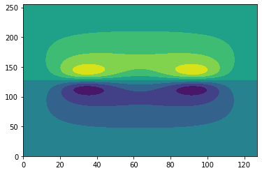
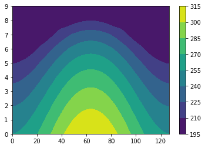
plt.figure()
cs=plt.contourf(theta_b['g'])
plt.colorbar(cs)
plt.figure()
cs=plt.contourf(psi_b['g'])
plt.colorbar(cs)
<matplotlib.colorbar.Colorbar at 0x7f7699d46550>
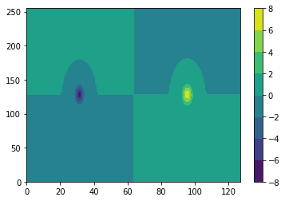
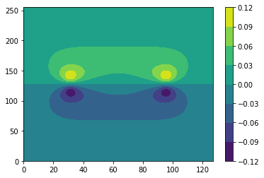
plt.figure()
cs=plt.contourf(theta_b['g'])
plt.colorbar(cs)
plt.figure()
cs=plt.contourf((-d3.div(u_b*theta_b_eq)-d3.div(u_b*theta_b)).evaluate()['g'])
plt.colorbar(cs)
<matplotlib.colorbar.Colorbar at 0x7ff283ba1d10>
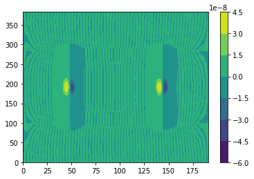
plt.figure()
cs=plt.contourf(u_b['g'][0].T)
plt.colorbar(cs)
<matplotlib.colorbar.Colorbar at 0x7f768c363b90>
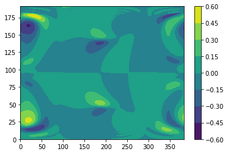
plt.figure()
cs=plt.contourf(-d3.div(d3.skew(u_b)).evaluate()['g'].T)
plt.colorbar(cs)
<matplotlib.colorbar.Colorbar at 0x7f768d49d4d0>
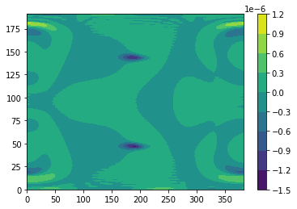
plt.figure()
cs=plt.contourf(theta_b['g']+theta_b_eq['g'])
plt.colorbar(cs)
plt.figure()
cs=plt.contourf(((theta_200_eq+theta_800_eq)/2).evaluate()['g'])
plt.colorbar(cs)
<matplotlib.colorbar.Colorbar at 0x7f768c5bd950>
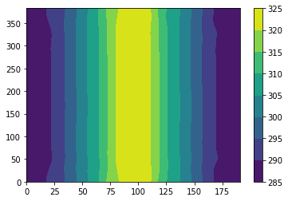
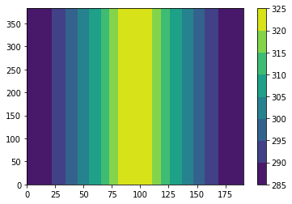
# Solver
solver = problem.build_solver(d3.RK222)
solver.stop_sim_time = stop_sim_time
# Analysis
snapshots = solver.evaluator.add_file_handler('snapshots', sim_dt=3600, max_writes=10)
snapshots.add_task(theta_c, name='theta_c')
snapshots.add_task(-d3.div(d3.skew(u_c)), name='vorticity')
# Main loop
try:
logger.info('Starting main loop')
while solver.proceed:
solver.step(timestep)
if (solver.iteration-1) % 10 == 0:
logger.info('Iteration=%i, Time=%e, dt=%e' %(solver.iteration, solver.sim_time, timestep))
except:
logger.error('Exception raised, triggering end of main loop.')
raise
finally:
solver.log_stats()
2022-05-03 15:15:51,675 subsystems 0/1 INFO :: Building subproblem matrices 1/127 (~1%) Elapsed: 0s, Remaining: 3s, Rate: 4.5e+01/s
2022-05-03 15:15:51,800 subsystems 0/1 INFO :: Building subproblem matrices 13/127 (~10%) Elapsed: 0s, Remaining: 1s, Rate: 8.8e+01/s
2022-05-03 15:15:51,920 subsystems 0/1 INFO :: Building subproblem matrices 26/127 (~20%) Elapsed: 0s, Remaining: 1s, Rate: 9.7e+01/s
2022-05-03 15:15:52,040 subsystems 0/1 INFO :: Building subproblem matrices 39/127 (~31%) Elapsed: 0s, Remaining: 1s, Rate: 1.0e+02/s
2022-05-03 15:15:52,169 subsystems 0/1 INFO :: Building subproblem matrices 52/127 (~41%) Elapsed: 1s, Remaining: 1s, Rate: 1.0e+02/s
2022-05-03 15:15:52,299 subsystems 0/1 INFO :: Building subproblem matrices 65/127 (~51%) Elapsed: 1s, Remaining: 1s, Rate: 1.0e+02/s
2022-05-03 15:15:52,419 subsystems 0/1 INFO :: Building subproblem matrices 78/127 (~61%) Elapsed: 1s, Remaining: 0s, Rate: 1.0e+02/s
2022-05-03 15:15:52,552 subsystems 0/1 INFO :: Building subproblem matrices 91/127 (~72%) Elapsed: 1s, Remaining: 0s, Rate: 1.0e+02/s
2022-05-03 15:15:52,677 subsystems 0/1 INFO :: Building subproblem matrices 104/127 (~82%) Elapsed: 1s, Remaining: 0s, Rate: 1.0e+02/s
2022-05-03 15:15:52,800 subsystems 0/1 INFO :: Building subproblem matrices 117/127 (~92%) Elapsed: 1s, Remaining: 0s, Rate: 1.0e+02/s
2022-05-03 15:15:52,899 subsystems 0/1 INFO :: Building subproblem matrices 127/127 (~100%) Elapsed: 1s, Remaining: 0s, Rate: 1.0e+02/s
2022-05-03 15:15:52,913 __main__ 0/1 INFO :: Starting main loop
2022-05-03 15:15:55,297 __main__ 0/1 ERROR :: Exception raised, triggering end of main loop.
2022-05-03 15:15:55,299 solvers 0/1 INFO :: Final iteration: 0
2022-05-03 15:15:55,305 solvers 0/1 INFO :: Final sim time: 0
2022-05-03 15:15:55,307 solvers 0/1 INFO :: Setup time (init - iter 0): 2.772 sec
2022-05-03 15:15:55,311 solvers 0/1 INFO :: Timings unavailable due because warmup did not complete.
---------------------------------------------------------------------------
RuntimeError Traceback (most recent call last)
<ipython-input-19-a85a0848f831> in <module>()
12 logger.info('Starting main loop')
13 while solver.proceed:
---> 14 solver.step(timestep)
15 if (solver.iteration-1) % 10 == 0:
16 logger.info('Iteration=%i, Time=%e, dt=%e' %(solver.iteration, solver.sim_time, timestep))
/usr/local/lib/python3.7/dist-packages/dedalus/core/solvers.py in step(self, dt)
567 # Advance using timestepper
568 wall_elapsed = wall_time - self.init_time
--> 569 self.timestepper.step(dt, wall_elapsed)
570 # Update iteration
571 self.iteration += 1
/usr/local/lib/python3.7/dist-packages/dedalus/core/timesteppers.py in step(self, dt, wall_time)
634 else:
635 sp.LHS = (sp.M_min + (k*H[i,i])*sp.L_min) @ sp.pre_right # CREATES TEMPORARY
--> 636 sp.LHS_solvers[i] = solver.matsolver(sp.LHS, solver)
637 for ss in sp.subsystems:
638 # Slice out valid subdata, skipping invalid components
/usr/local/lib/python3.7/dist-packages/dedalus/libraries/matsolvers.py in __init__(self, matrix, solver)
119
120 def __init__(self, matrix, solver=None):
--> 121 self.LU = spla.splu(matrix.T.tocsc(), permc_spec='NATURAL')
122
123 def solve(self, vector):
/usr/local/lib/python3.7/dist-packages/scipy/sparse/linalg/dsolve/linsolve.py in splu(A, permc_spec, diag_pivot_thresh, relax, panel_size, options)
324 return _superlu.gstrf(N, A.nnz, A.data, A.indices, A.indptr,
325 csc_construct_func=csc_construct_func,
--> 326 ilu=False, options=_options)
327
328
RuntimeError: Factor is exactly singular
hour
1
plt.figure()
cs=plt.contourf(d3.div(u_c*theta_b).evaluate()['g'])
plt.colorbar(cs)
plt.figure()
cs=plt.contourf(d3.div(u_c*theta_b).evaluate()['g']-(d3.div(u_c)*theta_b).evaluate()['g'])
plt.colorbar(cs)
plt.figure()
cs=plt.contourf((d3.dot(u_c,d3.grad(theta_b))).evaluate()['g'])
plt.colorbar(cs)
<matplotlib.colorbar.Colorbar at 0x7f10fce5e210>
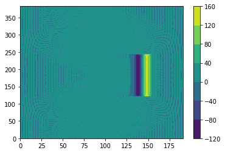
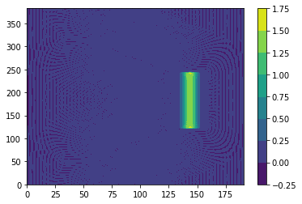
import matplotlib.pyplot as plt
plt.figure()
plt.plot(lat[0,:].T)
plt.plot(u['g'][0][200,:].T)
plt.figure()
cs=plt.contourf(u['g'][0].T)
plt.colorbar(cs)
plt.figure()
cs=plt.contourf(zcross(u).evaluate()['g'][0].T)
plt.colorbar(cs)
plt.figure()
cs=plt.contourf(-d3.div(d3.skew(u_c)).evaluate()['g'].T)
plt.colorbar(cs)
<matplotlib.colorbar.Colorbar at 0x7f2ba9947b50>
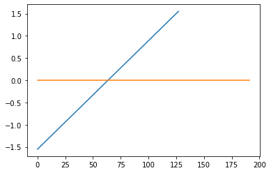
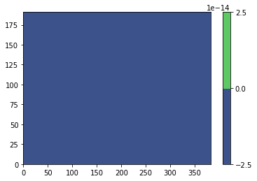
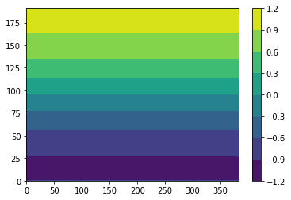
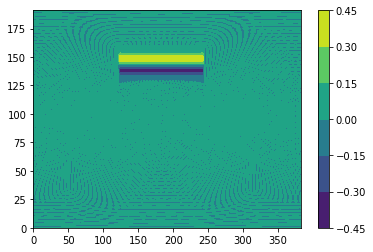
#cs=plt.contourf(lat.T)
#plt.colorbar(cs)
plt.plot(np.pi/2-theta.T)
[<matplotlib.lines.Line2D at 0x7f2baaa942d0>]
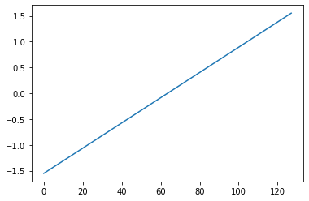
import matplotlib.pyplot as plt
# equilibrium temperature profile
p = np.arange(1000,0,-100)
PP,yy = np.meshgrid(p,theta.T)
Teq = np.zeros((np.shape(lat)[1],np.shape(p)[0]))
Teq2 = np.ones((np.shape(lat)[1],np.shape(p)[0]))*200
Teq = (315 - 60*np.cos(yy)**2-10*np.log(PP/1000)*np.sin(yy)**2)*(PP/1000)**(2/7)
Teq[Teq<200] = 200
plt.figure()
cs=plt.contourf(Teq.T)
plt.colorbar(cs)
# damping coefficient
ka = 1/40
ks = 1/4
kf = 1
k2 = (ks - ka)*((PP/1000-0.7)/(1-0.7))*np.sin(yy)**4
k2[k2<0] = 0
k_T = ka+k2
k_v = kf*(PP/1000-0.7)/(1-0.7)
k_v[k_v<0] = 0
#
theta_eq = Teq*(1000/PP)**(2/7)
theta_eq_200 = theta_eq[:,-2]
theta_eq_800 = theta_eq[:,2]
plt.figure()
cs=plt.contourf(theta_eq.T)
plt.colorbar(cs)
plt.figure()
cs=plt.contourf(k_T.T)
plt.colorbar(cs)
np.shape(theta_eq)
plt.figure()
#plt.plot(theta_eq_200)
#plt.plot((theta_eq_800+theta_eq_200)/2)
plt.plot((theta_eq_200-theta_eq_800)/2)
#T_eq['g'] = 315 - 60*np.cos(lat)**2-10
[<matplotlib.lines.Line2D at 0x7f809c1bbb50>]
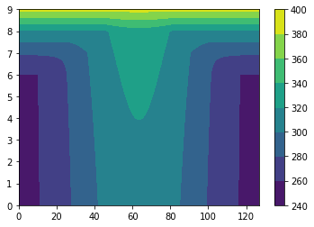
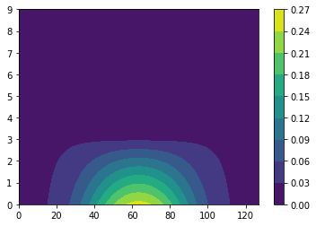
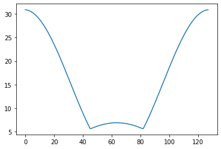
np.shape(theta_b['g'])
(256, 128)
import matplotlib.pyplot as plt
plt.contour(u['g'][1])
<matplotlib.contour.QuadContourSet at 0x7f80a70b8b10>
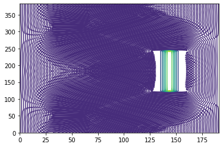
import matplotlib.pyplot as plt
plt.figure()
cs=plt.contourf(u['g'][1].T)
plt.colorbar(cs)
plt.figure()
cs=plt.contourf(d3.div(u).evaluate()['g'].T)
plt.colorbar(cs)
plt.figure()
#cs=plt.contourf((d3.skew(u)).evaluate()['g'][1].T)
cs=plt.contourf(-d3.div(d3.skew(u)).evaluate()['g'].T)
plt.colorbar(cs)
#d3.div(d3.skew(u)).evaluate()['g']
<matplotlib.colorbar.Colorbar at 0x7ff4812c3710>
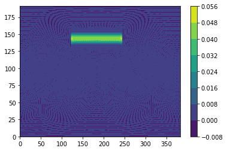
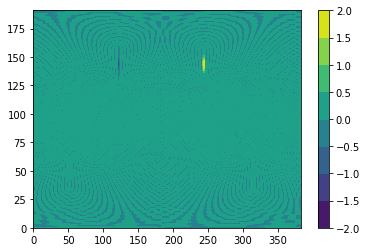
theta
array([[3.12287811, 3.09863496, 3.07424864, 3.04982997, 3.02539903,
3.00096216, 2.97652197, 2.95207974, 2.92763616, 2.90319165,
2.87874647, 2.85430079, 2.82985472, 2.80540836, 2.78096176,
2.75651496, 2.732068 , 2.70762092, 2.68317372, 2.65872643,
2.63427906, 2.60983161, 2.58538411, 2.56093656, 2.53648896,
2.51204132, 2.48759365, 2.46314594, 2.4386982 , 2.41425044,
2.38980266, 2.36535485, 2.34090703, 2.31645919, 2.29201133,
2.26756346, 2.24311558, 2.21866768, 2.19421978, 2.16977186,
2.14532393, 2.120876 , 2.09642806, 2.07198011, 2.04753216,
2.0230842 , 1.99863623, 1.97418826, 1.94974029, 1.92529231,
1.90084432, 1.87639634, 1.85194835, 1.82750035, 1.80305236,
1.77860436, 1.75415636, 1.72970836, 1.70526036, 1.68081235,
1.65636435, 1.63191634, 1.60746834, 1.58302033, 1.55857232,
1.53412432, 1.50967631, 1.4852283 , 1.4607803 , 1.4363323 ,
1.41188429, 1.38743629, 1.36298829, 1.33854029, 1.3140923 ,
1.28964431, 1.26519632, 1.24074833, 1.21630035, 1.19185237,
1.16740439, 1.14295642, 1.11850846, 1.0940605 , 1.06961254,
1.04516459, 1.02071665, 0.99626872, 0.97182079, 0.94737288,
0.92292497, 0.89847708, 0.87402919, 0.84958132, 0.82513347,
0.80068562, 0.7762378 , 0.75179 , 0.72734221, 0.70289445,
0.67844671, 0.65399901, 0.62955133, 0.60510369, 0.58065609,
0.55620854, 0.53176104, 0.5073136 , 0.48286623, 0.45841894,
0.43397174, 0.40952465, 0.38507769, 0.3606309 , 0.33618429,
0.31173793, 0.28729187, 0.26284618, 0.238401 , 0.21395649,
0.18951292, 0.16507068, 0.14063049, 0.11619362, 0.09176268,
0.06734402, 0.0429577 , 0.01871455]])
# Fields
u = dist.VectorField(coords, name='u', bases=basis)
h = dist.Field(name='h', bases=basis)
# Substitutions
zcross = lambda A: d3.MulCosine(d3.skew(A))
# Initial conditions: zonal jet
phi, theta = dist.local_grids(basis)
lat = np.pi / 2 - theta + 0*phi
umax = 80 * meter / second
lat0 = np.pi / 7
lat1 = np.pi / 2 - lat0
en = np.exp(-4 / (lat1 - lat0)**2)
jet = (lat0 <= lat) * (lat <= lat1)
u_jet = umax / en * np.exp(1 / (lat[jet] - lat0) / (lat[jet] - lat1))
u['g'][0][jet] = u_jet #g stands for grid and c stands for coefficient
import matplotlib.pyplot as plt
aa = zcross(u).evaluate()
plt.figure()
cs=plt.contourf(aa['g'][1])
plt.colorbar(cs)
plt.figure()
cs=plt.contourf(u['g'][0])
plt.colorbar(cs)
<matplotlib.colorbar.Colorbar at 0x7fea63eac410>
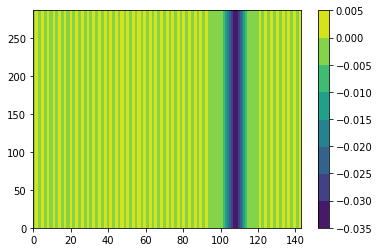
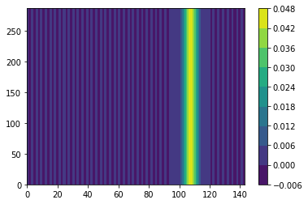
zcross = lambda A: d3.MulCosine(d3.skew(A))
h['g'] = 1
plt.figure()
cs=plt.contourf(d3.MulCosine(h).evaluate()['g'])
plt.colorbar(cs)
<matplotlib.colorbar.Colorbar at 0x7fea644b01d0>
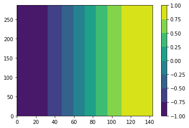